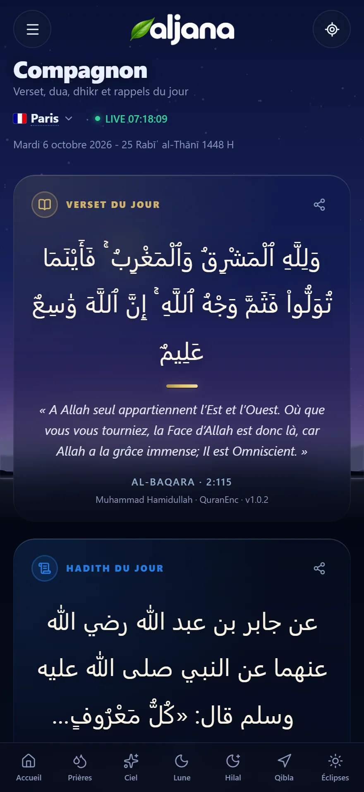

Le ciel, le temps et vos prières. À l’endroit exact où vous êtes.
aljana calcule pour votre position la prière en cours, le Soleil, la Lune, la Qibla et le croissant. Ce ciel est celui , maintenant.Prières, Soleil, Lune, Qibla et croissant, calculés pour l’endroit exact où vous êtes.
Le croissant sera-t-il visible ce soir ?
Et quand le croissant revient, aljana vous dit où et quand le chercher, selon les critères de Yallop et d’Odeh. L’annonce revient aux autorités.
Le Soleil avance, et chaque prière arrive à son heure.
La Lune, elle, compte les mois.
La direction de la Kaaba, calculée depuis chez vous.
Ciel : NASA/Goddard SVS, Deep Star Maps 2020 ; Gaia DR2 : ESA/Gaia/DPAC. Lune : NASA SVS, LRO/LROC/LOLA.
Sept univers. Chacun répond à une question simple.
Accueil · Prières · Ciel · Lune · Hilal · Qibla · Éclipses
Le ciel au-dessus de vous, maintenant.
Une carte orientée sur votre horizon : étoiles, planètes, Lune, Voie lactée. Le mode Œil nu ne garde que ce que vous pouvez vraiment voir.
Les prochaines éclipses, vues depuis chez vous.
Pour chaque éclipse de Soleil ou de Lune : ce que vous verrez depuis votre ville, et à quelle heure.
Votre Compagnon, au quotidien.
Chaque jour, un verset, un hadith et une duʿāʾ.
Le Muṣḥaf, page après page.
Al-Kahf, en un geste.


Exact, parce que vérifié.
Nous ne comparons pas aljana à d'autres applications. Nous comparons ses calculs aux références astronomiques, puis nous mesurons l'écart.
- Lever, coucher, midi solaire
- Comparés à JPL Horizons, à la seconde. Écart maximal mesuré : 13 secondes, de La Mecque à Sydney.
- Fajr, Asr, Isha
- Les angles et l'école de la méthode choisie, appliqués tels quels.
- Qibla
- Route la plus courte sur le globe et déclinaison du modèle WMM2025.
- Lune, Hilal, éclipses
- Phases et conjonctions contrôlées sur Horizons, éclipses sur les éléments besséliens de la NASA.
Pensée pour être lue dans votre langue.
Douze langues complètes. En arabe, en ourdou et en persan, toute l'interface s'inverse de droite à gauche. Choisissez la vôtre :
aljana arrive bientôt.
Regardez l'heure de la prochaine prière, puis levez les yeux : la Lune sera là où l'application vous l'indique.